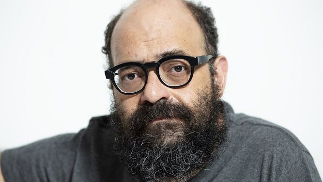

Sinopsis
Ignatius Farray ha provocado una revuelta popular y, en medio de la conmoción, el gobierno más progresista de la historia de España decide salvarle de ser un mártir de la libertad de expresión con una condición: acudir a sesiones de terapia obligatorias. El problema es que ni Pedro Sánchez ni sus consejeros bolivarianos conocen la envergadura del monstruo al que se enfrentan. Tras las memorias de Juan Ignacio, Ignatius toma la palabra y, ayudado por los vertiginosos dibujos de Aroha Travé, cuenta en este libro su versión salvaje y profunda de lo que supone ser el humorista más arriesgado de este país.
Biografía

Juan Ignacio Delgado Alemany (Granadilla de Abona, Tenerife, 2 de diciembre de 1973), más conocido como Ignatius Farray, es un cómico, escritor, monologuista, actor, guionista y cantante español, ganador del Premio Ondas y nominado al Emmy en 2018.
Según cuenta él mismo, su nombre artístico se compone de «Ignatius», mote con que le llamaba su profesor de música en el instituto por ser el personaje del libro La conjura de los necios de John Kennedy Toole, y «Farray», por el segundo apellido de su padre que lo utilizaba como piloto de rally amateur que era. Se licenció en Ciencias de la Información por la Universidad Complutense de Madrid. Tras un par de años en Londres, se familiarizó con el estilo de "Comedy Club" para luego regresar a Tenerife, donde comenzó sus primeros pasos en la comedia con monólogos humorísticos. Estos tenían diversas influencias, como el humor de Faemino y Cansado o varios cómicos norteamericanos como Richard Pryor, Steve Martin, Andy Kaufman y Lenny Bruce, llegando a ser comparado con alguno de ellos. Ha sido diagnosticado de miocardiopatía hipertrófica.